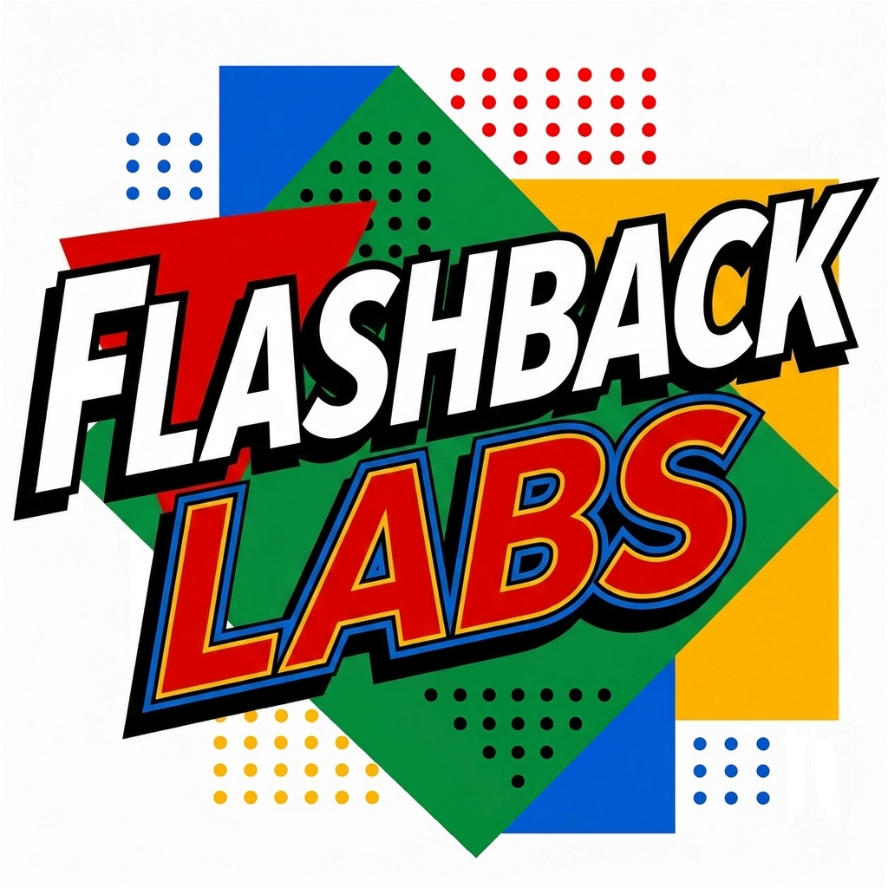

A playable 3D chess match against Bekah, our house engine — three difficulty levels, a full game report, and a little trash talk when she wins. Playable free in your browser right now.
 Back Home
Back Home
Flashback Labs
Flashback Labs is the development side of Vero Flashback — where the retro spirit of the shop turns into playable games for the web and mobile. Everything is built in-house, one pixel at a time.

A falling-sand physics sandbox with 80+ elements, machines, portals, and a fixed 70,000-particle engine. Currently in development for a mobile release on the app stores.
More small, polished retro-flavored games are on the bench. Follow the Whats New page for playable previews as they land.
Having trouble with one of our mobile games, found a bug, or want to suggest a feature? Email flashbacklabs@gmail.com and we'll get back to you as soon as we can — usually within a few days.
To help us fix things fast, include: the game name, your device model, and a quick description of what happened (screenshots welcome).
Our games collect no personal data — no accounts, no ads, no tracking. Game saves stay on your device. Read the full privacy policy.